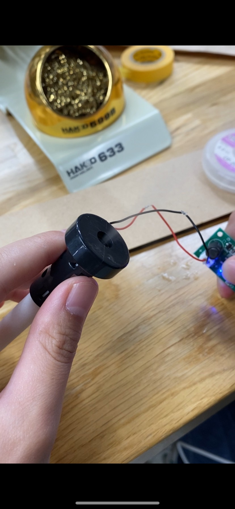
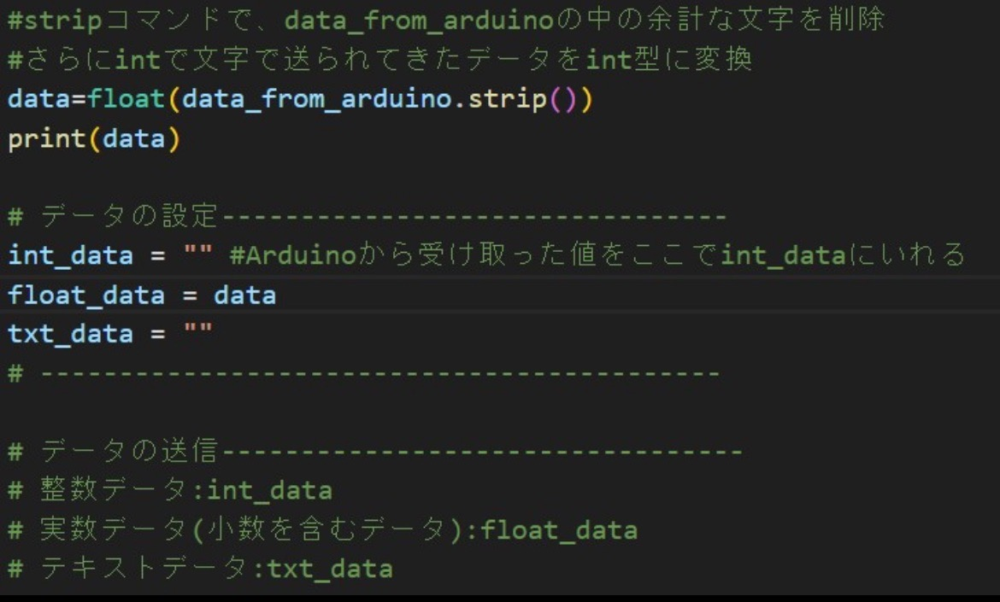
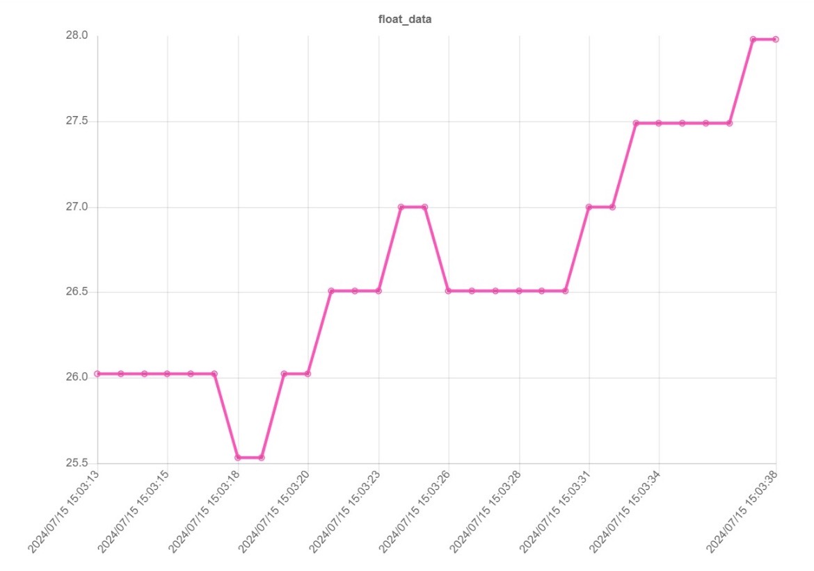

概要
日傘にミストをつける日差しを遮り暑さをしのぐだけでなく、ミストでさらに涼しくなる！
暑い夏を快適に過ごせる日傘！
■ ⇒考えること、疑問点など
● ⇒具体的なやること
▶ ⇒やったこと
■温度センサーのプログラミング
●温度センサーを使って温度を測定できるようにプログラムする
▶プログラム完成
// TMP36の出力ピンを接続したアナログピンの定義
const int sensorPin = A0;
void setup() {
// シリアル通信の初期化
Serial.begin(9600);
}
void loop() {
// アナログ入力を読み取る
int sensorValue = analogRead(sensorPin);
// 読み取った値を電圧（mV）に変換
float voltage = sensorValue * (5000.0 / 1023.0);
// 電圧を温度（摂氏）に変換
float temperatureC = (voltage - 600) / 10;
// 温度をシリアルモニタに出力
Serial.print("Temperature: ");
Serial.print(temperatureC);
Serial.println(" C");
// 1秒待機
delay(1000);
}
■温度センサーで一定の高い温度を測定したら、ミストを作動させるプログラミング
●ミストが作動するようにプログラミングする
▶リレーモジュールを使用してミスト生成機を制御した
▶プログラミング完成
// リレーの制御ピンを定義
const int relayPin = 7;
void setup() {
// リレーの制御ピンを出力モードに設定
pinMode(relayPin, OUTPUT);
// 初期状態としてリレーをオフにする
digitalWrite(relayPin, LOW);
}
void loop() {
// リレーをオンにする
digitalWrite(relayPin, HIGH);
// 5秒待つ
delay(5000);
// リレーをオフにする
digitalWrite(relayPin, LOW);
// 5秒待つ
delay(5000);
}
●温度センサーにIFのプログラミングをする
▶27度以上になるとリレーモジュールをONにしてミストを作動させるプログラム完成
// リレーの制御ピンを定義
const int relayPin = 7;
// 温度センサーの入力ピンを定義
const int tempSensorPin = A0;
// 温度の閾値を定義（摂氏温度）
const float thresholdTemp = 27.0;
void setup() {
// リレーの制御ピンを出力モードに設定
pinMode(relayPin, OUTPUT);
// 初期状態としてリレーをオフにする
digitalWrite(relayPin, LOW);
// シリアル通信を開始
Serial.begin(9600);
}
void loop() {
// 温度センサーの値を読み取る
int sensorValue = analogRead(tempSensorPin);
// 電圧に変換（Arduinoの3.3V基準で）
float voltage = sensorValue * (5000.0 / 1023.0);
// 温度に変換（LM35は10mV/°C）
float temperature = (voltage-600)/10;
// シリアルモニタに温度を出力
Serial.print("Temperature: ");
Serial.print(temperature);
Serial.println(" °C");
// 温度が閾値を超えたらリレーをオンにする
if (temperature > thresholdTemp) {
digitalWrite(relayPin, HIGH);
} else {
// 温度が閾値以下ならリレーをオフにする
digitalWrite(relayPin, LOW);
}
// 1秒待つ
delay(1000);
}
■ペットボトルの付け方
●広げたときは骨に密着するように、たたんだときはずらせるようにする
■ミスト生成機をつける ●傘の先端につける
▶ミストは傘の先端部分に
▶水はソース容器とホース、それぞれのミスト生成機に水が行くように作ったもので全体に行くようにする
■水からミストにする
●ミストにする機械を購入する
▶ミスト生成機を購入して、動作と構造の確認

■温度センサーで温度を感知しミストを作動させるにはどうしたらいいか
●ミスト生成機と温度センサーを連動させる
▶完成
■ペットボトルの水を吸い上げてミスト生成機に水を送る装置
●プロペラを作る
●水を吸い上げる装置を作る
▶完成
■温度センサーで取得した気温のデータを「dfLink」でグラフ化し、LINEと連携させて「例：27度以上が30分続いたらLINEで、水分補給をうながしたり休憩を取るよう注意を出したりする」などができるようにする
●温度センサーで感知した温度をdfLinkでグラフ化する
▶完成


●dfLinkとLINEの連携を行い、注意報などを送れるようにする（未完成）